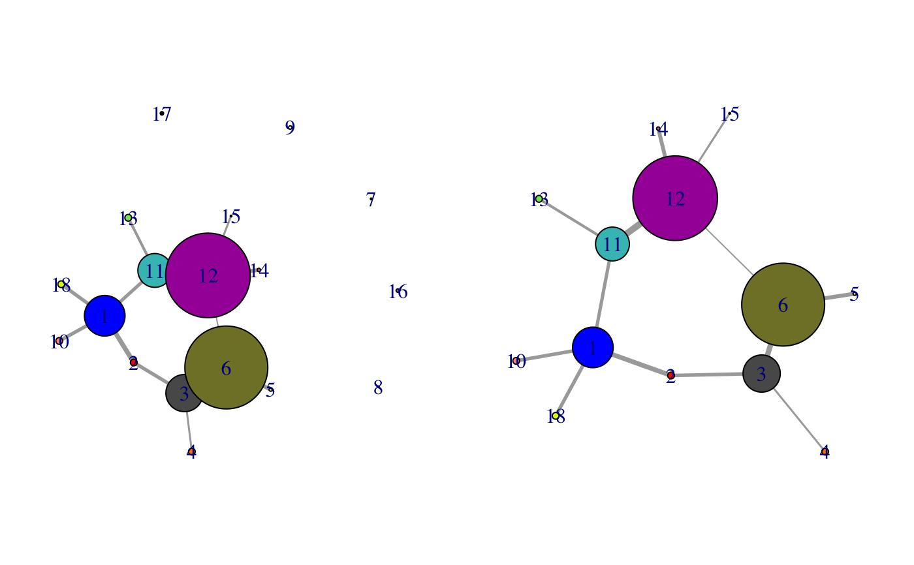

prune.cna.RdRemove nodes and their associated edges from a cna network graph.
prune.cna(x, edges.min = 1, size.min = 1)
| x | A protein network graph object as obtained from the ‘cna’ function. |
|---|---|
| edges.min | A single element numeric vector specifying the minimum number of edges that retained nodes should have. Nodes with less than ‘edges.min’ will be pruned. |
| size.min | A single element numeric vector specifying the minimum node size that retained nodes should have. Nodes with less composite residues than ‘size.min’ will be pruned. |
This function is useful for cleaning up cna network plots by removing, for example, small isolated nodes. The output is a new cna object minus the pruned nodes and their associated edges. Node naming is preserved.
A cna class object, see function cna for details.
Grant, B.J. et al. (2006) Bioinformatics 22, 2695--2696.
Barry Grant
Some improvements to this function are required, including a better effort to preserve the original community structure rather than calculating a new one. Also may consider removing nodes form the raw.network object that is returned also.
cna, summary.cna,
vmd.cna, plot.cna
if (!requireNamespace("igraph", quietly = TRUE)) { message('Need igraph installed to run this example') } else { # Load the correlation network attach(hivp) # Read the starting PDB file to determine atom correspondence pdbfile <- system.file("examples/hivp.pdb", package="bio3d") pdb <- read.pdb(pdbfile) # Plot coarse grain network based on dynamically coupled communities par(mfcol=c(1,2), mar=c(0,0,0,0)) plot.cna(net) # Prune network dnet <- prune.cna(net, edges.min = 1) plot(dnet) detach(hivp) }#> Obtaining estimated layout with fruchterman.reingold#> id size members #> 1 24 c(1:4, 94:107, 193:198) #> 2 4 5:8 #> 3 22 c(9:23, 64:70) #> 4 4 24:27 #> 5 2 28:29 #> 6 49 c(30:63, 71:85) #> 7 1 86 #> 8 1 87 #> 9 2 88:89 #> 10 4 90:93 #> 11 20 c(108:113, 117:122, 163:170) #> 12 50 c(114:116, 129:162, 171:183) #> 13 4 123:126 #> 14 2 127:128 #> 15 1 184 #> 16 2 185:186 #> 17 2 187:188 #> 18 4 189:192 #> Removing Nodes: 7, 8, 9, 16, 17 #> id size edges members #> 7 1 0 86 #> 8 1 0 87 #> 9 2 0 88:89 #> 16 2 0 185:186 #> 17 2 0 187:188 #> Obtaining estimated layout with fruchterman.reingold